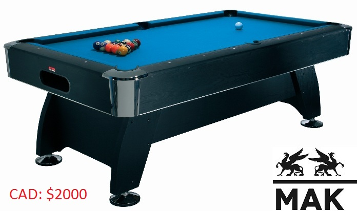
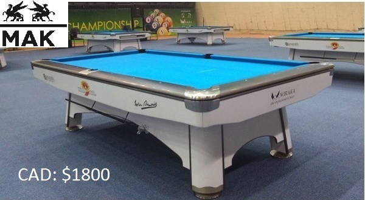
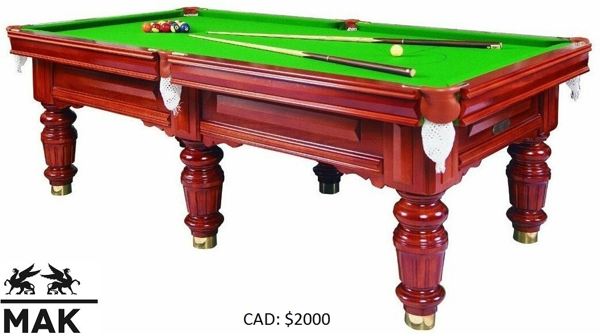
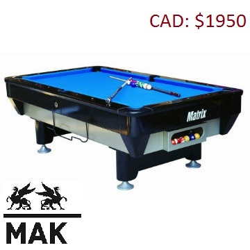
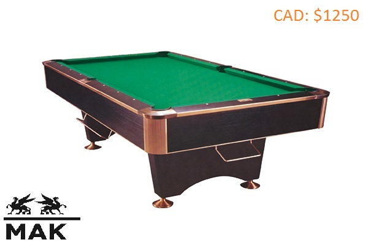

POOL TABLES

Boca Billiards 8' Pool Table
Weights & Dimensions
Overall: 32" H x 57" W x 101" D
Playing Surface: 44" W x 88" D
Suggested Minimum Room Size: 13' W x 17' D
Outside table: 55.5" W x 99.5" L
Product weight: 900 lbs
Playing Surface Thickness: 1 "
Leg Leveller Diameter: 6 "
Cue Stick Length: 57 "

Beringer Billiards TBL-25-Burgundy Ambrosia Pool Table
Weights & Dimensions
Height: 32 inches
Length: 8 feet 4 inches
Width: 4 feet 8 inches
Weight: 884lbs
Box Dimensions: 26 inches x 88 inches x 24 inches
Ship Weight:368lbs

Oak Hill Billiards 8' Pool Table
Weights & Dimensions
Overall: 32" H x 55" W x 99" D
Playing Surface: 44" W x 88" D
Suggested Minimum Room Size: 13' W x 17' D
Playing Surface Thickness: 1 "
Cue Stick Length: 57 "
Overall Product Weight: 690 lbs

Sierra 8' Pool Table
Weights & Dimensions
Overall: 48" W x 96" D
Tapered legs are 17'' high
Playfield is 44''W x 88''L

Traditional Cedar Log 8' Pool Table
Weights & Dimensions
Overall: 32.5" H x 60" W x 96" D
Suggested Minimum Room Size: 16' W x 13' D
Three piece 1'' thick slate top
Overall Product Weight: 1200 lbs
Snooker in its modern form originated in the latter half of the 19th century.
Billiards had been a popular activity amongst British Army officers stationed in India, and variations
on the more traditional billiard games were devised. One variation, devised in the officers' mess in Jabalpur
during 1874 or 1875,[8] was to add coloured balls in addition to the reds and black which were used for pyramid pool and life pool.